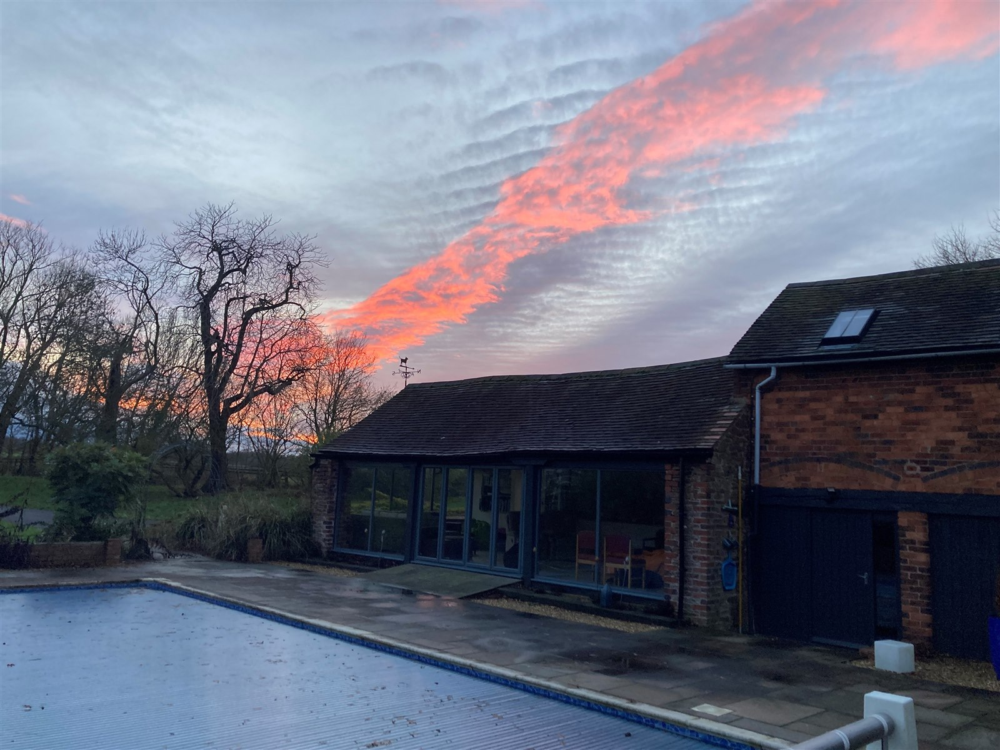

We witnessed the most incredible sunset yesterday evening, one that started quietly and built into something none of us will forget. It began with a simple red band low in the sky, caught here from beside the swimming pool.

The start of it all, from beside the swimming pool.
By the time James had walked up to the horse arena, just a few minutes later, it had developed into an intense explosion of reds and oranges spreading right across the sky.

The same sunset, a few minutes on, from the arena.
We're used to magnificent sunsets as our light pollution is so low out here. At this time of year the light has a huge amount of atmosphere to pass through as the sun sets, exactly the kind of condition that produces colour like this.This particular evening had an extra ingredient too: plenty of low cloud left behind by Storm Goretti, apparently just enough to catch and hold every last shade of red and orange before the light finally went.